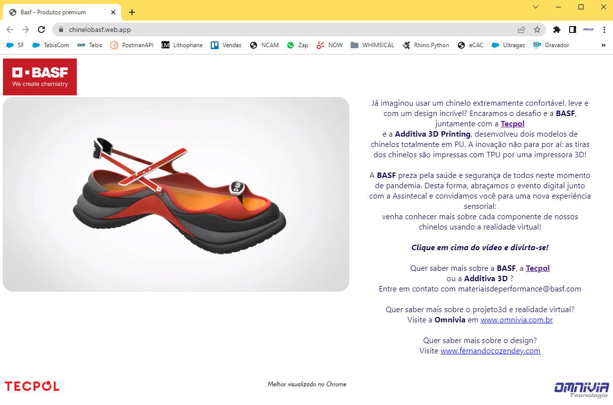

Site desenvolvido para a BASF apresentar modelos de sandálias e materiais inovadores. Foram desenvolvidos todos os modelos 3D, renderizações e animações, assim como o código da página. Clique na imagem para interagir. 